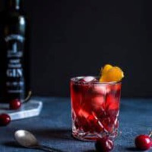
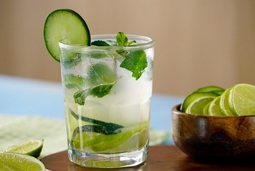
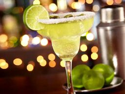
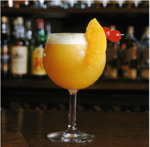
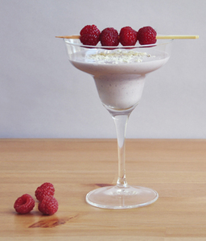
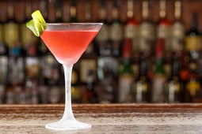

TRAGOS
Negroni

- 30 ml de Campari
- 30 ml de ginebra
- 30 ml de vermut rojo
- hielo
- Piel de naranja
- Coloque dos o tres piedras de hielo, grandes y transparentes en un vaso estilo Old Fashioned.
- Luego agregue 30ml de gin, 30ml de bitter rojo o Campari y la misma proporción de Vermouth Rosso.
- Revuelva suavemente y decore con una rodaja de naranja o con la piel de la naranja.
- Jamás use hielo picado porque el trago quedaría demasiado aguado.
Mojito

- 2 cucharadas pequeñas de azúcar blanco
- 8 hojas de hierbabuena o 2 de menta
- 30 ml de zumo de lima
- 60 ml de ron cubano
- 1/2 lima en rodajas o cuartos
- 120 ml de soda (Agua con gas)
- Hielo picado
- Toma un vaso alto y coloque las cucharadas de azúcar.
- Exprima la lima y deje gotear todo dentro del vaso.
- Agregue soda a la mezcla (Recuerde que siempre es el doble de la cantidad de ron).
- Agregue las hojas de Hierbabuena y aplástelas.
- Agregue el Ron y la cantidad de hielo que desee.
- Revuelve la mezcla y ¡listo! A disfrutar
Margarita

- 60 ml de tequila blanco o reposado
- 40 ml de triple seco o de licor de naranja
- 60 ml zumo de lima
- Sal y sirope de azúcar
- Hielo
- Copa de boca ancha para cóctel
- Empieza con la decoración: escarchar. Pasa un trocito de lima por el borde para que se moje.
- Pon abundante sal en un plato y en forma de círculo, haciéndolo coincidir más o menos con el diámetro de la copa. Pasa las copas por encima de la sal para que quede pegada.
- Exprime la lima para extraer su zumo, puedes utilizar un prensador de limas que resulta de lo más útil pero también te sirve cualquier exprimidor que utilices para limones o naranjas.
- Con una coctelera o un embase cerrado, cerrar y agitar para mezclar bien.
- Eche en la coctelera o embase unos hielos hasta la mitad y vierta el zumo de lima junto con el tequila y el triple seco. Ciérrela y agite muy bien hasta que la coctelera o el recipiente estén bien fríos.
- Sirva el coctel en las copas que habíamos decorado pero sin dejar que caiga el hielo.
Daikiri de durazno

- 45 ml de ron blanco cubano
- 1 durazno
- 1 cucharada sopera de jugo de limón
- 2 cucharadas de azúcar
- 1 vaso de hielo
- Pica el durazno en pedacitos y prepara tu licuadora.
- Introduzca el hielo en la licuadora para picarlo, si no picarlo a mano. Saca de la licuadora y reserva.
- Añada primero el durazno y el azúcar, luego el zumo de limón, el ron y, por último, el hielo picado.
- Licúa durante unos 15 segundos, dependiendo de la potencia de tu licuadora.
- ¡Vierte tu daiquiri de durazno en un vaso y disfruta! Puedes decorarlo con duraznos y pajitas.
Tequila kiss

- 60 ml de tequila
- 30 ml de Crema de Cacao Blanco
- 30 ml Crema Batida
- 15 ml Licor de Frambuesa Negra
- Frambuesas frescas
- Chispas de chocolate blanco
- Hielo
- En una coctelera poner el tequila, el licor de frambuesa negra, la crema de cacao, la crema batida y el hielo.
- Mezclar bien y filtrarlo en una copa.
- Decorar con chispas de chocolate blanco y dejar caer unas frambuesas.
Cosmopolitan

- 45 ml de vodka
- 15 ml de licor de naranja
- 45 ml de zumo de arándanos
- 15 ml de zumo de lima
- Hielo
- Unas rodajas de lima o cáscara de naranja para decorar
- Tritura arándanos y prepara zumo con una batidora, colar el zumo resultante.
- Exprime la lima para extraer su zumo, puedes utilizar un prensador de limas o un exprimidor de uso diario.
- Si no dispones de coctelera puedes utilizar cualquier otro recipiente que puedas cerrar y agitar, y mejor si es metálico o de cristal.
- Llena la coctelera de hielos y vierte en ella el vodka, el triple seco, el zumo de lima y el zumo de arándanos. Ciérrala y agita bien hasta que la coctelera o el recipiente estén bien fríos.
- Sirve el coctel Cosmopolitan en una copa de cóctel pero sin dejar que caiga el hielo.
- Decora con una rodaja finita de lima o una tira de cáscara de naranja.